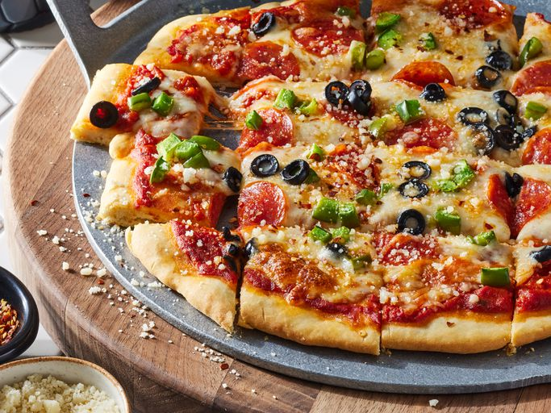

No-Yeast Pizza Dough

Here's how to make the perfect no-yeast pizza dough with these simple steps.
Ingredients:
- Flour;
- Baking powder;
- A pinch of salt;
- Half-cup of fat-free milk;
- Olive oil.
Steps:
- Mix the dry ingredients,
then stir in the wet ingredients until a dough forms;
- Turn out the dough and knead;
- Shape the dough into a ball and let rise;
- Roll the dough out into a circle.
How to cook the pizza:
- Preheat the oven to 400 degrees F (200 degrees C);
- Bake the crust in the preheated oven for 8 minutes;
- Top with your favorite toppings and bake
until the crust is golden brown,
about 10 to 15 minutes more;